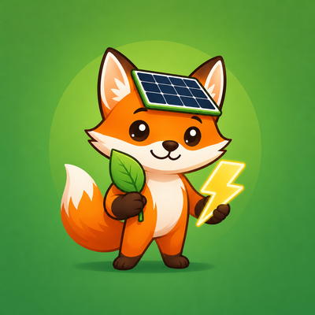
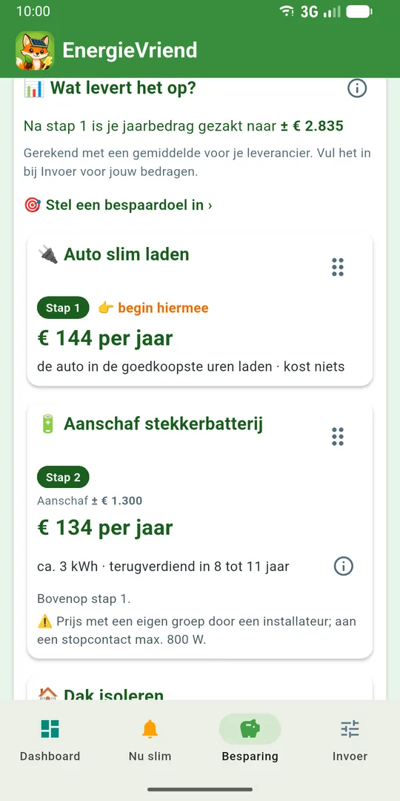
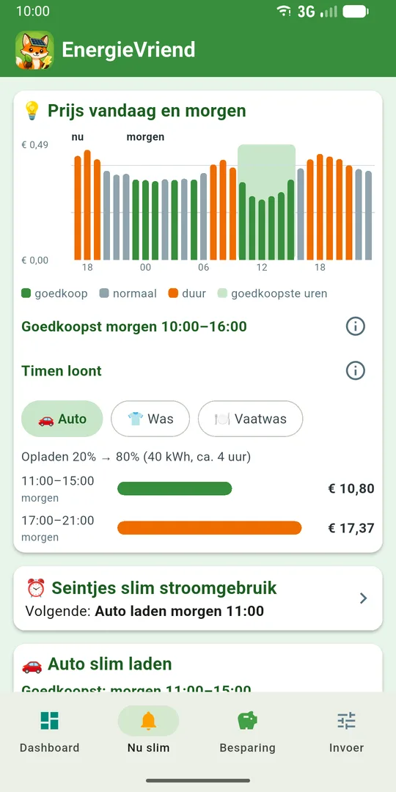
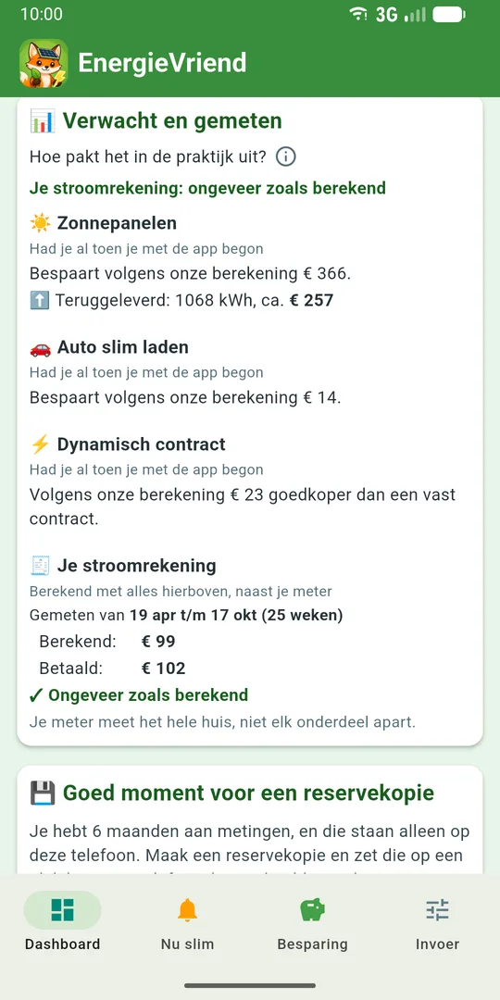

EnergieVriend
EnergieVriendWat loont er voor jóuw huis, en in welke volgorde?
Eén onafhankelijk advies voor isolatie, zonnepanelen, batterij en warmtepomp. Met je eigen metingen wordt het steeds preciezer.
Binnenkort in Google PlayGratis te gebruiken. Volledige versie eenmalig € 19,99 geen abonnement.
- Geen account, geen cloud
- Onafhankelijk
- Ook zonder P1-dongle

Zo ziet EnergieVriend eruit



Eén plan voor je hele huis
- Isolatie
- Zonnepanelen
- Thuisbatterij
- Stekkerbatterij
- Warmtepomp
- Warmtepompboiler
- Elektrische auto
- Laadpaal
De meeste rekenhulpen kijken naar één ding tegelijk, meestal de batterij. Maar in je huis hangt alles samen: een batterij, een boiler en een auto willen dezelfde zonnestroom, en na isolatie levert een warmtepomp weer anders op.
EnergieVriend rekent het samen door, uur voor uur over een heel jaar. Je ziet wat er loont, in welke volgorde, wat het kost en wanneer je het terugverdient. Wat je al hebt vink je af, en de volgorde kun je zelf schuiven.
Rijd je elektrisch, of denk je erover?
- Elektrisch gaan rijden? Zie wat het scheelt ten opzichte van tanken.
- Slim laden: laad op je eigen zonnestroom, of in de goedkoopste uren van vandaag en morgen.
- Laadpaal thuis: laad je nu openbaar en heb je een eigen oprit? Zie of een eigen laadpaal loont.
- Waar laad je meestal? Thuis, op je werk of onderweg: het advies past zich aan.
EnergieVriend geeft advies; de app stuurt je auto of laadpaal niet zelf aan.
De saldering stopt op 1 januari 2027
Heb je zonnepanelen, dan mag je de stroom die je teruglevert nu nog wegstrepen tegen wat je gebruikt. Vanaf 2027 stopt dat. EnergieVriend laat zien wat dat voor jou betekent en wat je eraan kunt doen: meer zelf gebruiken, een batterij, slim laden, of juist niets.
Kost het je merkbaar geld, dan krijg je een maand van tevoren een seintje, zodat je nog iets kunt doen.
Zie of het uitpakt
Advies is mooi, maar levert je aankoop op wat je verwachtte? Na een aanpassing zet EnergieVriend de verwachting naast wat je meter meet: voor zonnepanelen, batterij en slim laden, en voor isolatie, warmtepomp en boiler, met het weer verrekend.
En bij Wat je betaalde zie je wat je stroom echt gekost heeft.
Hoe meer je meet, hoe preciezer
Zonder metingen
Het advies rekent met je jaarverbruik en gemiddelden voor een huis als het jouwe. Een goed begin, maar algemeen.
Met een bestand
Download je verbruik bij je energieleverancier of een meterportaal en lees het in. Zo zie je wat je betaalde, en hoe je gasverbruik verandert.
Met een P1-dongle
Een dongle op je slimme meter meet elk uur. Dan leert de app jouw dagpatroon en de opbrengst van je panelen, en wordt het advies echt persoonlijk.
Onafhankelijk en privé
- Onafhankelijk advies, zonder belang bij je keuze.
- Geen account, geen cloud. Je metingen en alles wat je invult blijven op je telefoon.
- De app haalt alleen stroomprijzen en het weer op. Je metingen gaan nooit over internet.
- Geen advertenties, geen tracking.
Meer hierover in het privacybeleid.
Gratis, of de volledige versie
Gratis
Altijd
- Je advies: wat loont, in welke volgorde, en de terugverdientijd
- Nu slim: stroomprijzen en slim laden
- Metingen verzamelen met een dongle of een bestand
Volledige versie
Eenmalig € 19,99 geen abonnement
- Wat elke stap per jaar oplevert, en hoe dat berekend is
- Energieadvies op basis van je eigen metingen
- Wat je betaalde
- Verwacht en gemeten